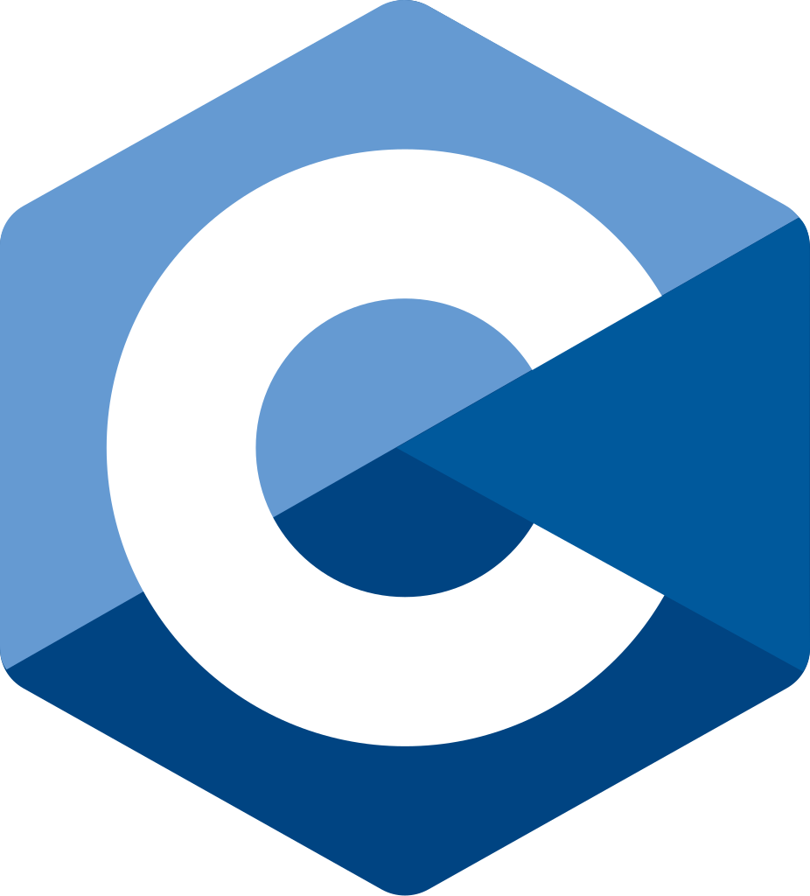
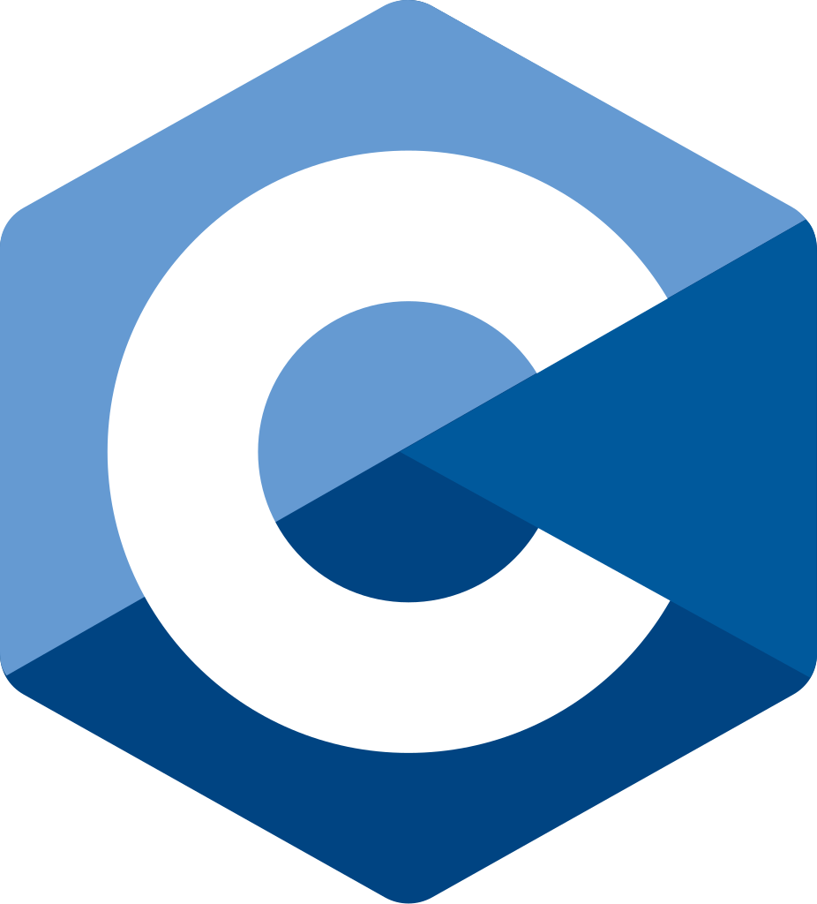

Software Development Engineer at Spacebel since September 2022, I manage the operation of digital satellite simulators in low Earth orbit for CNES.
At the same time, I have been a part-time lecturer at IPSA Toulouse since October 2022, where I teach digital electronics (for second-year students in the integrated preparatory cycle) and databases (for first-year engineering students).
A graduate engineer from IPSA (class of 2020), I chose the "Embedded Systems" option with the major "Space, Launchers, and Satellites". I was also the valedictorian of the ELSS promotion.
During my specialization, I acquired solid skills in programming (Python, Matlab, C/C++) and was introduced to various fields such as astrophysics, space mechanics, and exoplanet detection through photometry.
I also have a good understanding of geometric and wave optics applied to space, as well as electronics (analog and digital), embedded systems, and SQL databases.


Currently in charge of the operational management of satellite simulators for CNES, with responsibilities including:
- Analysis and diagnosis of failures on low Earth orbit satellite simulators.
- Training engineers on the use and maintenance of simulators.
- Conducting tests and monitoring skill retention procedures for teams.
 



Part-time lecturer for several modules at IPSA, with responsibilities including:
- 1st year engineering cycle: Teaching relational databases (MySQL, SQLite) and supervising Tutorials (TD) and Practical Sessions (TP).
- 2nd year integrated preparatory cycle: Supervising courses and TP in digital electronics, including Boolean algebra and the design of logic circuits with MOSFETs and diodes.
- Teaching Matlab and Simulink for applications in automation and dynamic systems.


R&D work on GNC (Guidance, Navigation, and Control) functions for autonomous and embedded systems:
- Theoretical and practical studies of GNC functions for orbit restitution and satellite station-keeping.
- Development of a C library for implementing Kalman filters adapted to orbit restitution needs.
- Analysis and validation of simulation models for these functions in a space environment.

Mission at MBDA as a consultant, responsible for the design and development of applications for testing and validating complex systems:
- Development of program sets for subsystem testing.
- Analysis of technical specifications and setting up related test environments.
- Writing documentation and managing the configuration of test programs.

Work on frequency drift interferometry to measure stray light on the MOSA instrument of the LISA project:
- Study of background noise and sources of non-linearity, and development of methods to minimize their impact on measurements.
- Design and testing of the laser control system for linear frequency scanning.
- Development of the test sequence for stray light on the MOSA test bench.


Internship within the RENOIR / LISA group for setting up an interferometric test bench for gravitational wave measurements:
- Remote control of test bench components via a Gigabit LAN network.
- Development of a Python interface for monitoring electrical signals.
- Real-time processing of signals from phase meters for spectral density analysis.


Internship in electrical engineering, where I carried out maintenance and inventory tasks:
- Compliance checks on machines (1,500 machines across the region).
- Preparation of reports and maintenance management of equipment.

Intern as a municipal worker at Rinxent Town Hall, where I participated in various maintenance and setup tasks:
- Maintenance of municipal buildings and renovation of the local football stadium.
- Organization and implementation of a fireworks display for the national celebration on July 14 (holder of the C4-T2 level 1 certification).